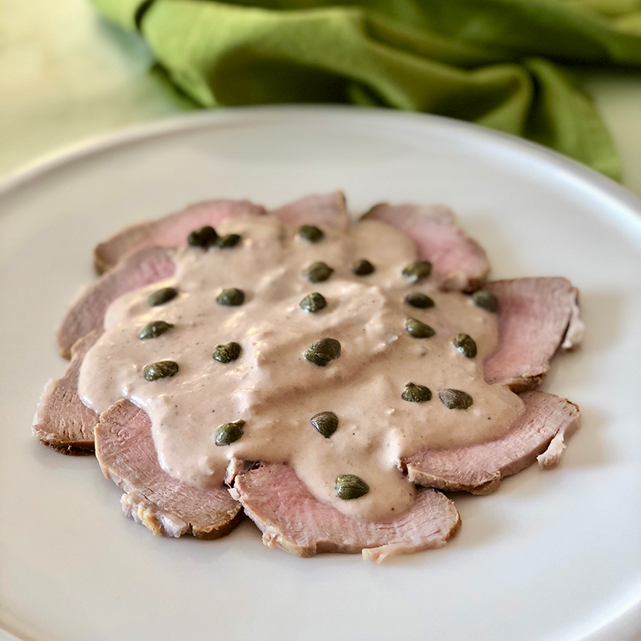

Vitello Tonnato

Vitello Tonnato is a veal-based dish.
Ingredients
Marinated Veal
- 600g of veal shoulder
- 1 carrot
- 1 onion, halved but not peeled
- 1 celery stick
- 2 garlic cloves
- 5 cloves
- 6 black peppercorns
- 2 bay leaves
- 1 pinch of salt
- 500ml of white wine
- 1.5l water
Tuna Sauce
- 100g of tuna tinned in olive oil, drained
- 60g of capers, drained
- 4 anchovy fillets
- 4 eggs, hard boiled
- 1 lemon, juice only
- black pepper, to taste
- 150ml of extra virgin olive oil
To garnish
Steps
- Begin by marinating the veal. Place the meat in a large saucepan with the carrot, onion, celery, garlic, cloves, peppercorns, bay leaves and salt. Pour the white wine over the meat, cover, and leave for about 30 minutes to allow the meat to marinate.
- Add the water to the pan, bring to the boil and turn the heat right down. Cover and simmer for 1 hour 30 minutes.
- Remove the meat from the liquid and allow to cool completely. Don’t throw the liquid away, strain it and use in another recipe.
- While the meat is cooling, make the tuna sauce. Place the tuna, capers, anchovy fillets and egg yolks in a food processor and blitz for about 30 seconds. Add the lemon juice and whiz for another 10 seconds. Season with black pepper.
- Turn the food processor onto the lowest speed and add the olive oil, slowly, in a single stream. The finished sauce will have a similar consistency to fresh mayonnaise.
- To serve, slice the beef as thinly as possible and place the slices on a large serving dish. Pour the sauce over the top of the meat but leave some of the meat showing around the edge. Garnish with whole capers.